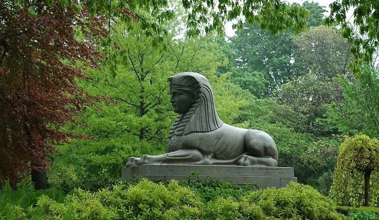

Mount Auburn Cemetery
The Mount Auburn Cemetery, dedicated in 1831, is the first garden cemetery in the United States. Located in Cambridge, Massachusetts, it is a stark contrast to the overcrowded and unhygienic burial plots that were so prevalent in New England during the formative years of the United States. With the help of the Massachusetts Horticultural Society, physician Jacob Bigelow proposed the Mount Auburn Cemetery in 1825 to address this problem and create a peaceful and quiet repose where the living could enjoy the space while they pay respects to the dead.
Every aspect of the cemetery was carefully thought out in order to provide the most picturesque, tranquil atmosphere. The winding paths and extensive horticulture make walking through the Mount Auburn a very calming experience, drawing you into the landscape and inviting you to learn more about the people buried there. It is also rich with history, giving unique insights into the art, politics, and everyday life of the Victorian Era. Many graves are adorned with intricate statues that themselves could be considered art. Its legacy as the nation’s first garden cemetery has set a precedent for future burial grounds, setting the stage for a future where the emphasis is placed on the importance of beauty, dignity, and respect in memorializing the dead.
Top Attractions
-

Washington Tower
The Washington Tower, built between 1852-1854, is one of the most popular attractions at the Mount Auburn. At the top of the 62-foot tower, you can experience panoramic views of the Boston skyline and surrounding area. On a clear day, you can see Harvard, the State House, and even the top of Wachusett Mountain.
Click here to learn more about the Washington Tower.
-

Bigelow Chapel
The Bigelow chapel, named after its designer and Mount Auburn founder Jacob Bigelow, was erected in 1844 as the first building on the cemetery’s grounds. Sitting atop a hill visible from the entrance, it serves as a prime example of Bigelow’s picturesque vision for the cemetery.
Click here to learn more about the Bigelow Chapel.
-

The Sphinx
In front of the Bigelow Chapel you can find the Sphinx, another one of Bigelow’s designs. It was gifted to the cemetery by him as a commemoration for the end of slavery and as a way to memorialize the Union soldiers that died during the Civil War. Engraved on the side, it reads: “American Union Preserved/ African Slavery Destroyed/ By the Uprising of a Great People/ By the Blood of Fallen Heroes.”
Click here to learn more about the Sphinx.
-

Consecration Dell
The Consecration Dell is an ethereal, woodland oasis situated 1,600 feet from the cemetery’s entrance. It serves as the location where the Mount Auburn’s first president, Joseph Story, delivered the consecration address in 1831.
Click here to learn more about the Consecration Dell.
-

Henry Wadsworth Longfellow's Grave
Henry Wadsworth Longfellow (1807-1882) is one of the many notable figures buried at the Mount Auburn. The monument was designed by his nephew, and is adorned with symbols that affected his work as a poet and his personal life.
Click here to learn more about the Henry Wadsworth Longfellow.
Notable People Buried at the Mount Auburn
- Henry Wadsworth Longfellow (1807-1882), educator and poet. Located at Lot 580 on Indian Ridge Path.
- Jacob Bigelow (1787-1879), physician and Mount Auburn founder. Located at Lot 116 on Beech Avenue.
- Joseph Story (1779-1845), Supreme Court Justice and Mount Auburn’s first president. Located at Lot 313 on Narcissus Path.
- Dorothea Dix (1802-1887), women’s rights activist. Located at Lot 4731 on Spruce Avenue.
- Oliver Wendell Holmes (1809-1894), physician and poet. Located at Lot 2174 on Lime Avenue.
- Charles Sumner (1811-1874), abolitionist and senator. Located at Lot 2447 on Arethusa Path.
Visitor Tips
- Get a map when you first enter, it is very easy to get lost!
- Follow the path with the green line down the middle if you do not have a map and need to get to the exit.
- There is no eating or sitting on the grass, so eat fuel up beforehand!
- There are public bathrooms at the entrance.
- Take a look at the Mount Auburn website before your visit to see if there any any monuments you don’t want to miss